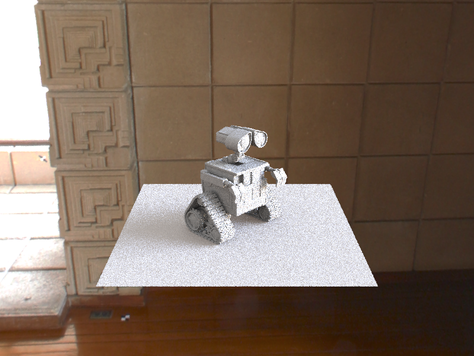

In assignment 3-2 we first implemented PLACEHOLDER in part 1. Then we chose part 3 as out second part where we implemented environment light using uniform sphere sampling and inversion-based importance sampling.
Part 1: Ray Generation and Intersection
Describe what you did in Part 1. etc...

|
Part 3: Environment Light
In part 3 we first write a sample_dir function with which we can trace along the direction of
a ray until we find the meet point on the environment map. This is achieved by converting global direction
to theta-phi representation and then convert the angle to environment map using a lerp operation.
The second task of part 3 is uniform sphere sampling. We write sample_L function with which we
can sample a uniformly random direction from a hitpoint and find the corresponding xy value on the
environment map.
The third task of part 3 is importance sampling using inversion method. We first update the init
function by storing
pdf_envmap with the environment map's pixel value and then normalize it. Then we compute the
marginal cumulative density function in marginal_y, which is a row-wise summation of
pdf_envmap along the width axis. The last step in the init function is to compute
cond_y by dividing values in pdf_envmap by the neighbor difference of
marginal_y (this will give us the true probability of P(y)).
After finishing init function, we need to update sample_L with importance sampling.
1. We first perform a 2D uniform sampling from [0, 1).
2. Then use the value of sample[1] to
inversely importance sample from the marginal distribution of y. This is achieved by using
std::upper_bound to compute the index of the next larger cumulative probability density.
3. After getting a fixed y-value, we repeat the inversion sampling on the conditional distribution of x
given y
to get x-value.
4. Once we get the xy combination, we lerp it on the environment map, and convert it to the
world direction.
5. Finally we set the value of pdf pointer to P(y) * P(x|y) and then multiply it by
w * h / (2 * PI * PI * sin(theta)).

|

|

|
When rendering our bunny the noise in uniform sphere sampling is higher than the one in importance sampling. We can see black dots on the surface of the left bunny.
|

|

|
When rendering our Wall-e the noise level between these two methods are closer than that of the bunny's. This is probabily because there is more polygons in the dragon mesh so that the ray samples are more likely to hit the model and thus gives back a valid radiance from the environment light source.